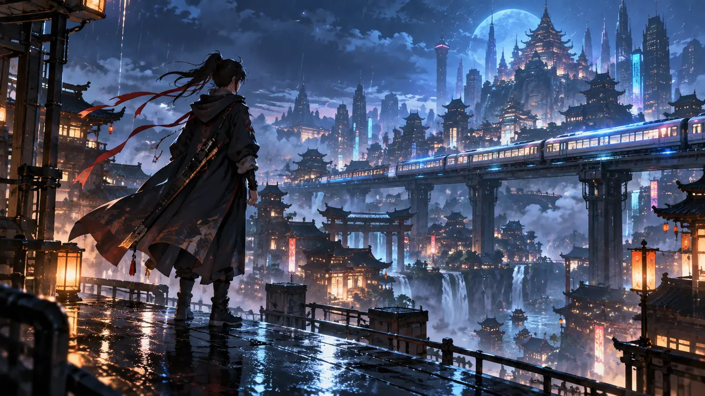

FRAMEFORGE
工作台
素材庫
專案
2,480 點數
⌁
PC
PROJECT / 霓虹雨夜
把一個念頭，變成會動的故事。
已自動儲存
草稿預覽
◫
匯出影片
↗

▶
SHOT 01
雨夜 · 天台遠景
▶
00:00
00:10
◖))
⛶
鏡頭序列
3 個鏡頭 · 10 秒
＋ 新增鏡頭
01
00:00–00:03
02
00:03–00:07
03
00:07–00:10
＋
新增
RECENT CREATIONS
最近作品
海岸晨光
12 秒 · 水彩風格
末班地下鐵
8 秒 · 電影寫實
漂浮花園
15 秒 · 立體黏土